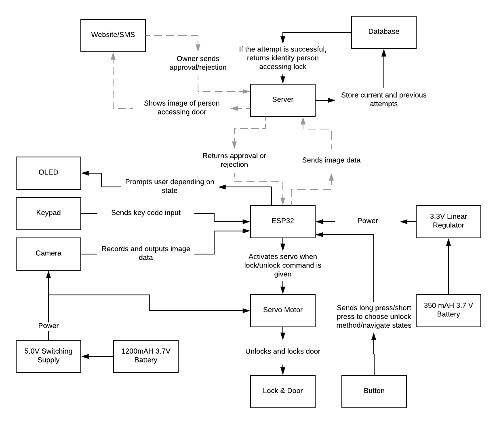
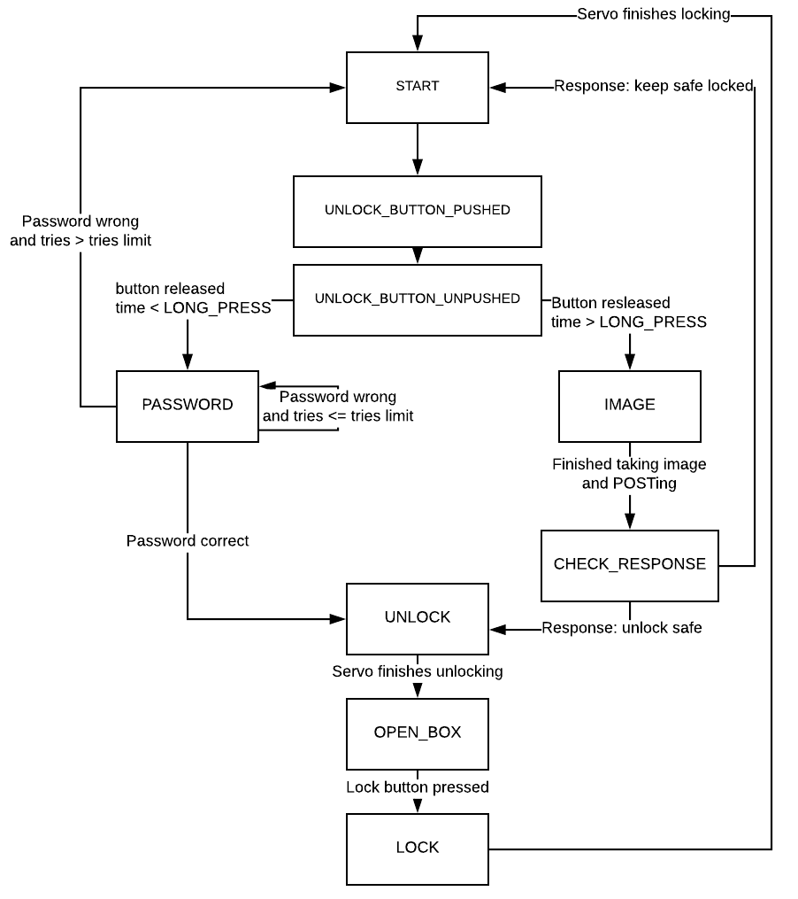

# Design Overview
Lockers and safes are good at what they are made to do: keeping unwanted people out. But what if you want to give a friend limited access to your valuables? Our project SnapSafe allows us to do just that. Like a standard safe, it allows you to enter a password through a keypad, but for someone who does not know it, there is an alternative method. Users will be able to request access by having the system send an image of them to the owner who will then either confirm or deny access remotely. This gives the owner more control over their SnapSafe, even when they are not next to it. <br/>
<center>
<iframe width="560" height="315" src="https://www.youtube.com/embed/CkDFsvYOZks" frameborder="0" allow="autoplay; encrypted-media" allowfullscreen></iframe>
<p>SnapSafe functionality with keypad</p>
</center>
<br>
<center>
<iframe width="560" height="315" src="https://www.youtube.com/embed/jI6qAeEvnxU" frameborder="0" allow="autoplay; encrypted-media" allowfullscreen></iframe>
<p>SnapSafe functionality with camera</p>
</center>
## Functionality and User Interaction
<p>To begin interaction with the safe, users are prompted by the starting screen to press the right button to enter the keypad and type in the password or hold down the right button to contact the owner and send an image to them. Upon a short press, the user can press the buttons on the keypad to enter the password, backspace, or cancel the password entering process entirely and return to the start screen. If the user enters the password correctly, the servo unlocks the safe and the user can open the door, but if it is incorrect the safe stays locked. After opening, the user can then shut the door and press the left button to trigger the servo to re-lock the safe.</p>
<p>If the user instead holds down the button to contact the owner, the screen displays “get image” and the camera takes an image of the user shortly after. This image is then sent to the server in the form of a base64 jpeg string. Upon receiving this POST request, the server stores that data and texts the owner that someone is requesting access to their safe. The owner can then click the link in their text to view the image taken and decide whether to unlock the safe or keep it locked. After the owner makes a decision, the safe then either unlocks or stays locked. If unlocked, the user is then able to shut the door and press the left button to re-lock after accessing the contents of the safe.</p>
<p>Upon being re-locked, despite which method was used to unlock it, the safe then displays its original start screen again until either the user attempts to access the safe again or the sleep timer puts the safe into deep sleep. When in deep sleep, users can simply push the right button to wake the safe up. Upon waking up, the safe re-connects to the internet and then displays its original start screen.</p>
## Functional Block Diagram of the System
<center>

</center>
## Pinout of our ESP
<center>
<img src="./media/608 pinout with IO labels.png" width="600"/>
</center>
## Arduino Code
* Main:
* _setup()_: Sets up OLED, checks to ensure proper connection to the ArduCAM, connects to WiFi, initializes buttons (as well as linking a button to sleep)
* _loop()_:
Will power off the camera in the first iteration of the loop.
Has the main state machine:
<center>

</center>
* START: Initial state of device. After waiting a minute in this state without action, the device will go to sleep. When the lock button is pushed, it will start the button_timer and go to UNLOCK_BUTTON_PUSHED.
```
//ESP32 in deep sleep after a minute
if (millis()-sleep_timer>60000){
oled.clearBuffer();
oled.sendBuffer();
esp_deep_sleep_start();
}
```
* UNLOCK_BUTTON_PUSHED: Unlock button is pushed. Once button is released, go to UNLOCK_BUTTON_UNPUSHED.
* UNLOCK_BUTTON_UNPUSHED: Unlock button has just been released. Check how long the button was held using button_timer. If the time is < LONG_PUSH_THRESH, go to PASSWORD. Else, go to IMAGE.
* PASSWORD: Reads user input through the keypad. Calls getPassword and processes the input properly, including if it’s a ‘B’ for backspace or ‘C’ for cancel (in which case it goes back to START). Once the user has entered 4 digits, calls checkPassword to verify. If correct, go to UNLOCK. If wrong and the number of tries > ALLOWED ATTEMPTS, go back to START. Else, if wrong, clear the input but stay in PASSWORD.
```
//Changes input if user backspace or cancels
if (newKey == 'B'){
if (keypadPassword.length() > 1){
keypadPassword = keypadPassword.substring(0, keypadPassword.length()-2);
}else{
keypadPassword = keypadPassword.substring(0, keypadPassword.length()-1);
}
}else if (newKey == 'C'){
keypadPassword = "";
passwordAttempts = 0;
delay(100);
sleep_timer = millis();
state = START;
}
```
* IMAGE: Triggers camera. First powers on camera and calls serverCapture. Once done, power off camera and go to CHECK_RESPONSE. Set get_counter (the number of GET requests made) to 0.
* CHECK_RESPONSE: Repeatedly calls do_GET at BUZZ_WAIT intervals. Each time, if response is “None” stay in this state and increment get_counter. Once have made more than 10 GET requests, go to START. If get a different response, check if it’s “Unlock.” If so, go to UNLOCK. Else, go to START.
```
//Periodically sends GET requests to server
if (millis() - image_response_timer > BUZZ_WAIT){
get_counter++;
image_response_timer = millis();
String response = do_GET();
if (response != "None"){
Serial.println(response);
if (response == "Unlock"){
state = UNLOCK;
}else{
sleep_timer = millis();
state = START;
}
}
}
```
* UNLOCK: Calls actuate(True) to unlock the safe. Then, go to OPEN_BOX.
* OPEN_BOX: Safe is open. Waits here until the lock button is pushed and go to LOCK.
* LOCK: Calls actuate(False) to lock the safe. Then, go to START.
* _pretty_print(int startx, int starty, String input, int fwidth, int fheight, int spacing, SCREEN &display)_: Formats text to fit on the OLED properly.
* cameraHelper: Has all the code to help with taking photos and sending them as well as getting a response
* _start_capture()_: Prepares camera to take a photo and then begins capture.
* _camCapture(ArduCAM myCAM)_: Reads image and generates a Base64 encoded string. Stores string in cam_data and then passes that to do_POST
```
//Code to Base64 string
raw_samples[sample_num%3] = temp;
sample_num++;
if (sample_num%3 == 0){
cam_data += base64::encode(raw_samples, 3);
}
```
* _do_POST(String cam_data)_: Sends a POST request to server with the string it receives
* serverCapture: Called by the state machine. Responsible for overseeing the entire process of taking and sending photo in POST request.
* _do_GET()_: Sends a GET request to server. Returns a string from the body of the response.
* keypadHelper: Manages the keypad and checks password
* _getPassword()_: Reads input from keypad. Appends the new character to the current input string. Returns the character just received.
```
/*
* Reads keypad and appends input to password string
* returns the last key pressed
*/
char getPassword(){
char key = keypad.getKey();
if (key){
keypadPassword += key;
}
return key;
}
```
* _checkPassword()_: Returns True if input and correct password match, False otherwise.
* servoHelper: Has code to control the servo
* _actuate(bool lock)_: Controls the servo. Unlocks the box if given True. Locks the box if given False.
```
/*
* Controls servo
* if lock = True, will unlock safe
* if lock = False, will lock safe
*/
void actuate(bool lock) {
if (lock == false) { // if input is True, move to unlock
servo.write(170);
delay(205);
servo.write(86);
}
else {
servo.write(8);
delay(205);
servo.write(86);
}
}
```
## Server Code
<p>In chronological order as used when operating our SnapSafe, our server code first handles one POST request and then two different types of GET requests, one from the web (typically a mobile phone) and one from the microcontroller itself. In the process of handling these requests and carrying out our project’s desired functionality, we use three different imported python libraries. We used sqlite3 for database management, datetime for tracking dates and times of our database entries, and the twilio REST API for text messaging support.</p>
<p>The first request we handle with the server code is an initial POST request from our ESP which contains a JSON formatted dictionary containing the picture info from the safe and a base64 jpeg string of the image. The request handler code first extracts this jpeg string from the request dictionary, and then creates a connection to our picture database location. We use a try/except format to create a new picture table within the database if it doesn’t already exist or insert a new entry into that table if it already does exist. We handle the creation and manipulation of our databases and tables with various sqlite3 commands. Our picture database has two columns, the first for a timestamp of the image and the second for the image string. If the table already exists, we add an entry with the time of the image POST and the corresponding image string to the table. We then finally use the twilio library to send a text to the owner of the SnapSafe’s cellphone notifying them that someone is requesting access to the safe and containing a link to the site that allows them to view who is trying to access and take further actions.</p>
<p>Upon the owner clicking on this link in the text message, the second of our three requests is initiated, a GET request from the web. The request handler knows which type of GET request is being made by checking the “values” dictionary of the request to see whether there is a “device” key specified. If there is no “device” key in this dictionary, we know it is a web-type request and continue accordingly. The first thing we do is establish a connection to our picture database with sqlite3 and retrieve the most recent entry into that database. We then convert the first element of that entry, the date and time in string form, into a datetime object using a built-in function of that library. We subtract this object from the current time to see how long ago the entry was made and check whether this time is below our threshold of sixty seconds to decide how to proceed. If the last entry was made too long ago, a string is returned to the owner telling the last time someone tried to access the safe. Otherwise, html is returned displaying the image of the person trying to access and giving two buttons for the owner to decide whether to unlock the safe or keep it locked. Once one of these buttons are pressed, this same GET request is launched with the decision stored as a value in the “values” dictionary. Upon receiving this request, the handler sees that “decision” is a key in the “values” dictionary and creates or inserts the time and decision into a lock table and database similar to the process for creating the picture database and table above.</p>
<p>Our third and final request is a GET request sent by the ESP once every five seconds until it receives a response or times out after 60 seconds. These requests start being sent after the ESP sends its initial POST request and are intended to check for the owner’s response to the unlock request. The request handler sees that the “device” key is in the “values” dictionary and follows the following steps. It first establishes a connection to the lock database and retrieves the last entry into the lock table. It then creates a datetime element for the time of the last entry and checks if that entry was made within the past sixty seconds in the same fashion as the last GET request. If so, the server code adds a new “None” entry into the lock database and then returns the action that was stored in the last entry to the ESP. If the last entry was made over sixty seconds ago, “None” is simply returned. The ESP then acts on these responses to either unlock the safe or keep it locked, completing the desired functionality of both the server code and the SnapSafe as a whole!</p>
## Power Management
<p> Our system uses two batteries: one 1200mAH battery stepped up to 5.0V used to power the servo and camera, and a 350mAH battery stepped down to 3.3V used to power everything else. When the safe is in the “start” state, the ESP32 is put into deep sleep after being idle for 60 seconds in the state. If the unlock button is pressed while it is in deep sleep, the ESP is woken up and begins in the “start” state. In addition, the camera turns on when a picture is about to be taken and is promptly turn off after. </p>
<center>
</center>
<p> (It was assumed that we used the camera to open the safe every time.) </p>
## Design/Hardware Challenges
<p>Throughout the design and fabrication process of SnapSafe, we experienced a myriad of challenges that we had to overcome. Initially, one of our goals was to have the safe segmented into two portions: one for storing actual goods, and the second being a place where we can store the ESP. However, during the last week, our 5V power board malfunctioned and ceased to work. Since we were not that familiar with the board itself, we assumed it was either a bug, or the servo/camera stopped working. Thus, we spent a lot of our time attempting to isolate the bug in both the code and hardware. Ultimately, we decided that due to time constraints it was not feasible to properly cable manage and segment SnapSafe into two compartments. Instead, we put our efforts into cable management and making sure none of the wires got caught in the servo and hinges of the door. </p>
<p>The buzzer was a piece of hardware that we originally had in the SnapSafe that would provide user feedback. However, we realized that for some reason the buzzer could not work simultaneously with the servo. We tried changing the IO pins of both the servo and the buzzer, but none of the combinations resulted in the two working together. Ultimately, we decided to remove the buzzer because the servo contributed to the core functionality of SnapSafe (locking mechanism), while the buzzer was merely a peripheral that helped with the user experience. </p>
<p>We initially wanted to have the oled be the main way for SnapSafe to communicate with the user. However, with the servo, camera, and buzzer all connected to the ESP, we did not have enough IO pins to accommodate the oled. However, after realizing that the oled could share IO pins with the other hardware, we reconnected the oled to the ESP. Yet, the fully integrated system with the servo, keypad, oled, camera, and buzzer all connected still would not work. As mentioned above, we realized that it the buzzer was causing integration issues and removed it. At this point, with the removal of the buzzer, the servo, keypad, and camera were all working; however, the oled still would not turn on. After talking to Joe about the issue, he recommended changing the oled from one that communicates over SPI to I2C. I2C inherently handles pin sharing significantly better than SPI. Ultimately, the whole system worked seamlessly, and the only piece of hardware removed was the buzzer. </p>
<p>Since SnapSafe used the ArduCam OV7670 camera and a FeeTech continuous rotation servo, a 5V power source was needed. The biggest challenge with powering the entire device was realizing that we needed 2 batteries. We powered the ESP and keypad with the 350mAh 3.7V battery, and used the voltage step-up board (5V) to power the camera and servo. Note that we had to get a 1200mAh battery as opposed to the 350mAh battery we normally use because of the charging mechanism on the voltage step-up board (350mAh battery cannot be charged safely from the step-up board). Powering the whole system with one 3.7V battery without the step-up board was simply impossible as the battery could not provide the necessary voltage needed to run the servo and camera. </p>
<p>Finally, the locking mechanism underwent significant change. Initially, the locking mechanism was composed of the servo connected to a wire, that was then hooked onto a bolt lock. When we actuated the servo, it would move the wire and thus pull the bolt either forward or backwards- locking SnapSafe. However, we realized that after multiple actuations the wire connecting the servo to the bolt lock would start to deform, and SnapSafe could not lock properly. We found a better solution on Thingiverse where user Ian Teknik uploaded a 3-D printed servo lock design. Teknik's design was based on a servo connected to a gear, where a corresponding set of teeth was found on the bolt. By rotating the servo and gear assembly, the bolt would move into either a locked or unlocked position. This 3-D printed design is significantly more consistent and stable than the design that used the bolt lock and wire. </p>
<p>The servo also wasn't the easiest piece of hardware to work with. At first, we had to find an ESP compatiable library that allowed us to use the native arduino functions to control the servo. Furthermore, the arduino functions control the servo by rate of rotation and not position, leading to multiple instances of the servo drifting. When we finally got the servo to work, each rotation wouldn't necessarily be consistent and it would be off by a couple degrees. While this was a significant problem when we used the old locking mechanism, with the new 3-D printed parts, the magnitude at which the servo varied with each rotation did not matter as much, thereby nullifying the issue. </p>
<p>The ArduCAM Itself was a challenge. Beyond getting the initial demo code working, it was a challenge getting it to work with the rest of our project. There were many components to the code that we didn’t necessarily understand but had to just treat as a black box that worked. Therefore, much of the integration involved trying to manipulate our new code around the demo we already had working. In addition, the camera needed to be connected to WiFi in order to then send the picture. There were several times where the code wouldn’t work simply because our WiFi connection wasn’t stable enough, making it very frustrating to debug as we thought it was an issue with the camera. Also, encoding the image using Base64 was complicated and in the end, our code still isn’t the most efficient way to do so. Still, once we got it working, we didn’t want to change it too much since it was hard to know if what we change could impact the rest of the camera functionality. </p>
<p>The keypad was one of the more straightforward parts to implement. The library was easy to use and there was good sample code to mimic. Overall, it posed more of a hardware challenge since it used 8 pins, one for each column and one for each row. With so many different components to our project, the number of open pins we could use was an issue. There were times we considered just not using some pins on the keypad and sticking to just the numbers instead of also using the letters. In the end, we were able to fit all 8 pins in our set up and used two letters, ‘B’ and ‘C’, to give the user extra control over what they enter. </p>
## Results and Looking Forwards
<p>We are very happy with how SnapSafe turned out. We managed to debug the system to a point where its functionality was not hindered by software or hardware bugs- enabling SnapSafe to be seamless and intuitive. However, looking forwards, we believe that SnapSafe can be easily improved by compartmentalizing the ESP, thereby providing the user with more space to store their valuables. Furthermore, having some sort of buzzer or alarm would also make the user experience better as it gives the user tangible feedback. Another feature that could be added to SnapSafe is some sort of video streaming capability from the camera as opposed to just images. Thus, allowing for even greater security. Biometric technology could also be easily added to SnapSafe, making the unlock and lock process for trusted users even more convenient.
## Parts List Not In Base System
<b>Adafruit Powerboost 1000C</b> <br/>
URL:https://www.adafruit.com/product/2465 <br/>
Vendor: AdaFruit <br/>
Unit Price: $19.95 <br/>
Quantity: 1 <br/>
Total Price: $19.95 <br/>
Item Number: 2465 <br/>
Description: Voltage step up board to 5V <br/>
Use Case: Power servo and camera <br/>
<b>SH1106 I2C Oled Display Module</b> <br/>
URL:http://www.dx.com/p/0-96-128-x-64-i2c-interface-yellow-and-blue-oled-display-module-board-for-arduino-419092#.Wv3WFS-ZORc <br/>
Vendor: DX <br/>
Unit Price: $4.45 <br/>
Quantity: 1 <br/>
Total Price: $4.45 <br/>
Item Number: 419092 <br/>
Description: Oled that communicates over I2C as opposed to SPI <br/>
Use Case: Display critical information to the user <br/>
<b>Lithium Ion Polymer Battery - 3.7v 1200mAh</b> <br/>
URL:https://www.adafruit.com/product/258 <br/>
Vendor: Adafruit <br/>
Unit Price: $9.95 <br/>
Quantity: 1 <br/>
Total Price: $9.95 <br/>
Item Number: 258 <br/>
Description: 1200mAh 3.7V LiPo <br/>
Use Case: This battery will be used <br/>
<b>4x4 Membrane Keypad</b> <br/>
URL:https://www.amazon.com/dp/B01FDEIT0U <br/>
Vendor: Amazon <br/>
Unit Price: $6.79 <br/>
Quantity: 1 <br/>
Total Price: $6.79 <br/>
Item Number: B01FDEIT0U <br/>
Description: 16 button membrane keypad <br/>
Use Case: Allows user to input password into SnapSafe <br/>
## Sources
* Servo library: https://github.com/jkb-git/ESP32Servo
* Keypad code: http://www.instructables.com/id/Connecting-a-4-x-4-Membrane-Keypad-to-an-Arduino/
* Servo Lock Mechanism: https://www.thingiverse.com/thing:465349
* Keypad library: http://playground.arduino.cc/Code/Keypad
* ArduCAM code: https://iesc-s2.mit.edu/608/spring18/documentation/arducam and http://www.arducam.com/knowledge-base/arducam-esp32/
* ArduCAM library: https://github.com/ArduCAM/ArduCAM_ESP32S_UNO
* SQLite: https://sqlite.org/index.html
* Twilio: https://www.twilio.com/
* <b>Sources for power calculations</b>
* Camera (OV2640): http://www.arducam.com/arducam-mini-released/#more-934
* Servo (similar model to the FS5103R that we used): https://www.parallax.com/sites/default/files/downloads/900-00008-Continuous-Rotation-Servo-Documentation-v2.2.pdf